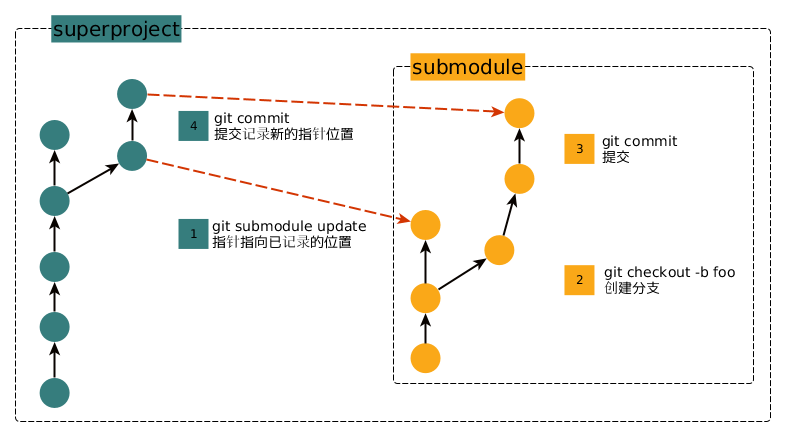

Posts tagged "Git":
The binary search algorithm is also an efficient strategy for narrowing down problem space
Binary search algorithm is a search algorithm that finds the position of a target value within a sorted array. It cuts off the target array in half in a pass, so that it has a worst-case performance of O(log n).
We all know that it's an efficient searching algorithm, but the strategy behind it also applies for narrowing down other problem space, for example, finding out when a bug is first introduced in a series of git commits.
Let's say I have a git repo of 8 commits, the first 5 of which are good, but then the 6th commit introduces a bug, so I have a git commit history looks like below:
|g|g|g|g|g|b|b|b| ---------------------> the git commit history
So I know that the first commit is good and the last (8th) commit is bad (these are initial problem space), by leveraging the strategy of binary search, it can quickly find out that the 6th commit is the first bad commit. (Check the 4th element first, then the 6th.)
Well, that's basically how git bisect works, and it's more powerful, it can be run with a script to determine if current commit is good or not, saving time to verify it manually.
Recently, I managed to use git bisect to find out a recession bug (#1410) of qtile, which reports that qtile-cmd doesn't work anymore which the HEAD commit (0617235c), but it works with tag v0.14.2.
With those in mind, here are the steps to catch the first bad commit:
Start the bisect session:
git bisect start 0617235c v0.14.2$ git bisect start 0617235c v0.14.2 Bisecting: 88 revisions left to test after this (roughly 7 steps) [082e4c7248ac40b69dbe94cfdc4de6aecc5f74ba] Fix debian version
Make a judge script(attached at the end) and find out the commit by running
git bisect run ./scripts/git-bisect-judgeIt only takes git 6 steps to find the first broken commit, the output is following with qtile logs being removed:
$ git bisect run ./scripts/git-bisect-judge running ./scripts/git-bisect-judge Bisecting: 44 revisions left to test after this (roughly 6 steps) [fdb3a324aadb0f934080a703d6835a9a7d203720] Delay power renormalization running ./scripts/git-bisect-judge ... Bisecting: 21 revisions left to test after this (roughly 5 steps) [0262fbc2ca23d27fa33c4903d7e8a9b8c14d42eb] Move around modules running ./scripts/git-bisect-judge ... Bisecting: 10 revisions left to test after this (roughly 4 steps) [a3ae3c623859b247813fc1876b188c4d40e84df0] Move calls out of the command graph running ./scripts/git-bisect-judge ... Bisecting: 5 revisions left to test after this (roughly 3 steps) [036dbcb1b7c5c0fff00fbfbb9688597e2d2f188c] Add tests to the command graph running ./scripts/git-bisect-judge ... Bisecting: 2 revisions left to test after this (roughly 1 step) [9c3c78ca66905b4e11bfd7a155cfe883cbe12ad6] Create new command graph running ./scripts/git-bisect-judge ... Bisecting: 0 revisions left to test after this (roughly 0 steps) [ed5eefbf3482481c1f0f4c1cb2eb79e571fec835] Use correct type annotations in IPC module running ./scripts/git-bisect-judge ... ed5eefbf3482481c1f0f4c1cb2eb79e571fec835 is the first bad commit commit ed5eefbf3482481c1f0f4c1cb2eb79e571fec835 Author: Sean Vig <sean.v.775@gmail.com> Date: Wed Jun 19 22:33:45 2019 -0400 Use correct type annotations in IPC module With python/typeshed#3061 making it into the most recent release of mypy, remove the hacks on the type annotations around the marshal module. :040000 040000 d21cc05b503a0f4658647adad3169efbd84eaa16 f80f29304abd86da9299dfaf22f6719698a37e63 M libqtile bisect run success- End the session by running
git bisect reset, git will restores your previouse HEAD commit.
The judge script git-bisect-judege is below:
#!/bin/sh HERE=$(dirname $(readlink -f $0)) SCREEN_SIZE=${SCREEN_SIZE:-1000x800} XDISPLAY=${XDISPLAY:-:1} LOG_LEVEL=${LOG_LEVEL:-DEBUG} LOG_LEVEL=INFO if [[ -z $PYTHON ]]; then PYTHON=python fi ./scripts/ffibuild CLIENT="urxvt" Xephyr +extension RANDR -screen ${SCREEN_SIZE} ${XDISPLAY} -ac & XEPHYR_PID=$! sleep 0.5 source ~/workspace/virtualenv/qtile-devel/bin/activate env DISPLAY=${XDISPLAY} ${PYTHON} "${HERE}"/../bin/qtile -l ${LOG_LEVEL} $@ & QTILE_PID=$! export DISPLAY=${XDISPLAY} cd ~/workspace/python/qtile sleep 0.5 ./bin/qtile-cmd -o screen -f info EXIT_CODE=$? kill -9 $QTILE_PID kill $XEPHYR_PID exit $EXIT_CODE
Why can't Git fetch remote branches other than master?
Last week I came into a problem with Git, that I can't fetch the remote branch that I pushed to. It was so weird because I can push the local branch there. It never happens before, and it happened when I was in a rush to rebase my code, as someone in my team pushed his code.
After searching, it seemed that the configuration of fetch of that repo was different(this Stack Overflow thread for example) than before, it was specified that only master can be fetched. It worked after I changed it to +refs/heads/*:refs/remotes/origin/*.
I reflected why it happened after work, the only difference I can remember was that I clone that repo with the option --depth <N>, that is, it was a shallow clone to save disk space.
Today I had some time at hand, and I confirmed that the option is the problem by reading the git-clone(1) manpage, it notes that:
--depth <depth>
Create a shallow clone with a history truncated to the specified number of commits. Implies --single-branch unless
--no-single-branch is given to fetch the histories near the tips of all branches.
Let's demonstrate it by cloning my dotfiles repo with different options, and it shows clearly that Git will only fetch master of the remote repo if only specifying --depth:
$ cd /tmp/ $ git clone --depth 1 https://github.com/whatacold/dotfiles.git dotfiles-depth1 $ git clone --no-single-branch --depth 1 https://github.com/whatacold/dotfiles.git dotfiles-no-single-branch $ git clone https://github.com/whatacold/dotfiles.git dotfiles-full $ grep 'remote "origin"' -A 2 dotfiles-depth1/.git/config [remote "origin"] url = https://github.com/whatacold/dotfiles.git fetch = +refs/heads/master:refs/remotes/origin/master $ grep 'remote "origin"' -A 2 dotfiles-no-single-branch/.git/config [remote "origin"] url = https://github.com/whatacold/dotfiles.git fetch = +refs/heads/*:refs/remotes/origin/* $ grep 'remote "origin"' -A 2 dotfiles-full/.git/config [remote "origin"] url = https://github.com/whatacold/dotfiles.git fetch = +refs/heads/*:refs/remotes/origin/*
I don't know why --single-branch should be implied by default, at least for me, I just want to fetch all the remote branches.
How to revert a series of commits with Git?
Sometimes, I need to revert a series of commits that are already pushed, doing a git hard reset is not an option, as someone may already have new commits based on mine.
For example, assume that I've made a few commits like below:
65a2c62 * commit 10 25cad43 * commit 9 72ad583 * commit 8 ceebf9a * commit 7 acf8a11 * commit 6 28d526f * commit 5 63af1e2 * commit 4 982c71c * commit 3 0fb4c2d * commit 2 acf9da1 * commit 1 b5f9933 * commit 0
Now for whatever reason, I need to "drop" the changes made by commit 6 to commit 10, that is, go back to commit 5 without deleting commit.
How to do that?
One way is to use git revert 28d526f..HEAD to reversely revert the commits, which results in below commit history:
66808e5 * Revert "commit 6" 2661e48 * Revert "commit 7" db86ec6 * Revert "commit 8" fde9cb5 * Revert "commit 9" 3bf102f * Revert "commit 10" 65a2c62 * commit 10 25cad43 * commit 9 72ad583 * commit 8 ceebf9a * commit 7 acf8a11 * commit 6 28d526f * commit 5 63af1e2 * commit 4 982c71c * commit 3 0fb4c2d * commit 2 acf9da1 * commit 1
It works, but it makes too many commits, in many cases that's not what I want, I'd rather make only one commit.
So is there a better way? The other day, I found the soft reset can suite my needs.
But how is it possible? Generally, git reset is used to move HEAD around the commits and/or to reset the index and working tree. The magic is that a soft reset can reset HEAD to a specific commit but leave the index and working tree untouched, so if I soft-reset HEAD from "commit 5" to "commit 10", it will move HEAD directly to "commit 10", but let the index as is, so that the index has the diff from "commit 10" to "commit 5" at the same time (Difference between git reset soft, mixed and hard - davidzych.com illustrates different kinds of reset in detail.)
Here are the steps:
git branch master-bak # create a backup branch in case commits lost git reset --hard 28d526f # the commit 5 git reset --soft master-bak git commit -m "Revert the commits [6,10]" git diff 28d526f..HEAD # confirm that it doesn't have any diffs
P.S. It's a bit boring to prepare git commits above, so I bake a helper script to do that:
#!/bin/bash COUNT=0 REPO="" if [ $# -ne 2 ] then echo "Usage: $0 <REPO-DIR> <COUNT>" exit 1 fi REPO=$1 COUNT=$2 echo "Creating the repo and cd'ing into it..." mkdir -p $REPO && cd $REPO [ ! -d .git/ ] && git init . echo "Making commits..." for i in `seq 0 $COUNT`; do echo "modification made by commit $i" >> demo.txt git add demo.txt git commit -m "commit $i" done
如何理解 Git submodule
Git 虽然很强大，但也有少数命令很难理解。 submodule 就是这么一个例子，其文档教程也不少，比如 Git - Submodules - git-scm.com ， 但我之前始终没有真正领悟到如何使用。
直到有天看了一条 StackOverflow Answer ，茅塞顿开，才真正理解了 submodule 。
submodule 涉及到两个仓库类型：
- submodule
- 子模块，比如需要使用的第三方库
- superproject
- 主仓库，自己的工程，依赖子模块代码
Git submodule 本质上是两个独立的仓库，各自可以独立地像普通的 repo 一样操作。 同时 superproject 有一个“指针”，记录了它使用的子模块的 commit revision 。 这个“指针”对于从 SVN 转过来的同学来说会比较不适应，因为 SVN External 没有这个设计， 所以 SVN 无法精确控制所使用的子模块 revision ，更新主仓库时会自动更新其“子模块”的代码为最新的， 如果“子模块”是外部的代码并且不稳定的话，会影响自己的代码。
带着这个认知，在 superproject 中更新 submodule 的操作步骤示意如下： 
无论是 superproject 还是 submodule ，都像普通的 repo 一样进行 branch, add, push, diff 等等的操作，
只是最后再通过 git submodule 命令再更新下新“指针”位置即可。